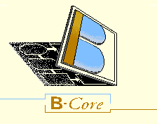

Help Contents
Abstract Machine Notation (AMN)
B-Method
Abstract Machine Notation
Mathematical Notation
Structuring Developments
ASCII Symbols for AMN
The B-Toolkit
B-Toolkit
BToolkitd
Environment Variables
Options
The B-Platform
Construct Manipulation
Introduce
Open
Close
Commit Edits
Reset
Rename
Remove
Hypertext
Overview
Status
Analysis
Analyser
Animator
Mini-Remake
Remake
Proof
Proof Obligation Generator
AutoProver
InterProver
BToolProver
Proof Printer
Displaying Undischarged Obligations
Removing a Proof Level
Generators
Base Generator
Enumerator
Interface Generator
Code
Translator
Linker
Execution
Documents
Document Mark Up Tool
Documents
On-screen Display
Printing
Libraries
System Library
Adding to the System Library
Utilities
Getting Started
B-Toolkit Installation
Changing Directory
Reset
Find
Palettes
Save Development
BUnlock
BProcessInfo
Also available in the form of a complete
Index
.
©
B-Core (UK) Limited
, Last updated: 22 Feb 2002
 © B-Core
(UK) Limited, Last updated: 22 Feb 2002
© B-Core
(UK) Limited, Last updated: 22 Feb 2002
© B-Core
(UK) Limited, Last updated: 22 Feb 2002
© B-Core
(UK) Limited, Last updated: 22 Feb 2002